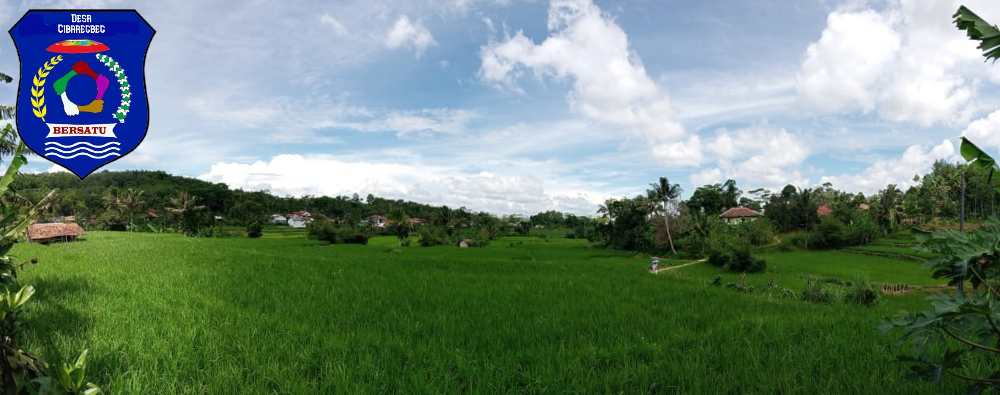

Selamat Datang di Website Resmi Desa Cibaregbeg

Sejarah Desa Cibaregbeg

Profil Wilayah Desa Cibaregbeg

Visi dan Misi

Pemerintah Desa

Desa Membangun Indonesia

Penyelenggaraan Pemerintahan Desa

Penganggaran Pembangunan secara Partisipatif
Pemerintah Desa
Administrator

SUSUNAN ORGANISASI DAN TATA KERJA PEMERINTAH DESA
DESA CIBAREGBEG KECAMATAN SAGARANTEN KABUPATEN SUKABUMI
Kepala Desa bertugas menyelenggarakan Pemerintahan Desa, melaksanakan pembangunan, pembinaan kemasyarakatan, dan pemberdayaan masyarakat. Untuk melaksanakan tugas Kepala Desa memiliki fungsi-fungsi sebagai berikut:
Menyelenggarakan Pemerintahan Desa, seperti tata praja ..selengkapnya
Selamat Datang di Website Resmi Desa Cibaregbeg

Selamat Datang di Website Resmi Desa Cibaregbeg , kECAMATAN sAGARANTEN Kabupaten Sukabumi. Media komunikasi dan transparansi Pemerintah Desa Cibaregbeg untuk seluruh masyarakat. ..selengkapnya
Sejarah Desa Cibaregbeg
Administrator

Berikut ini sejarah Desa Cibaregbeg
Desa Cibaregbeg adalah salah satu desa di Kecamatan Sagaranten, yang terletak dari Kota Kecamatan. Sampai saat ini sejarah kelahiran Desa Cibaregbeg bisa diketahui secara pasti karena adanya bukti-bukti tertulis yang menerangkan tentang asal usul atau sejarah dari Desa Cibaregbeg, akan tetapi berdasarkan cerita dari para tetua kami, Penyusun mencoba ..selengkapnya
Profil Wilayah Desa Cibaregbeg
Administrator

Berikut ini Profil Wilayah Desa Cibaregbeg
1. Luas Wilayah
Luas pemukiman
Luas persawahan
Luas perkebunan
Luas kuburan
Luas ..selengkapnya
Visi dan Misi
Administrator

VISI MISI Desa Cibaregbeg
Visi
Visi Desa Cibaregbeg tahun 2015-2021 : "Terwujudnya Desa Cibaregbeg yang Aman, Damai dan Sejahtera".
Misi
Misi Pembangunan Desa Cibaregbeg:
..selengkapnya
Desa Membangun Indonesia
Administrator

Menemukan ruh pembangunan yang memberdayakan tidaklah mudah. Reformasi di Indonesia pada tahun 1998 telah memilih sis-tem desentralisasi. Otonomi daerah menjadi konsep operasionalnya. Bukan tidak berhasil, tapi penyelenggaraan otonomi daerah ternyata belum mampu melahirkan kesejahteraan bagi lapisan masyarakat ter-bawah yang hidup di desa. Bahkan gini rasio 1 terus meningkat sudah di atas 0,41 yang menandakan ..selengkapnya
Penyelenggaraan Pemerintahan Desa
Administrator

Membumikan makna desa sebagai subjek paska UU Desa bukanlah sesuatu yang mudah dilakukan. Pelbagai ujicoba dilakukan oleh elemen pemerintah dan masyarakat sipil untuk dapat menggerakkan desa agar benar-benar menjadi subjek pembangunan. Berbagai praktik dan pembelajaran telah muncul sebagai bagian dari upaya menggerakkan desa menjadi subjek pembangunan seutuhnya. Idiom subjek tidak bermakna pemerintahan desa ..selengkapnya
Silahkan ajukan pertanyaan.